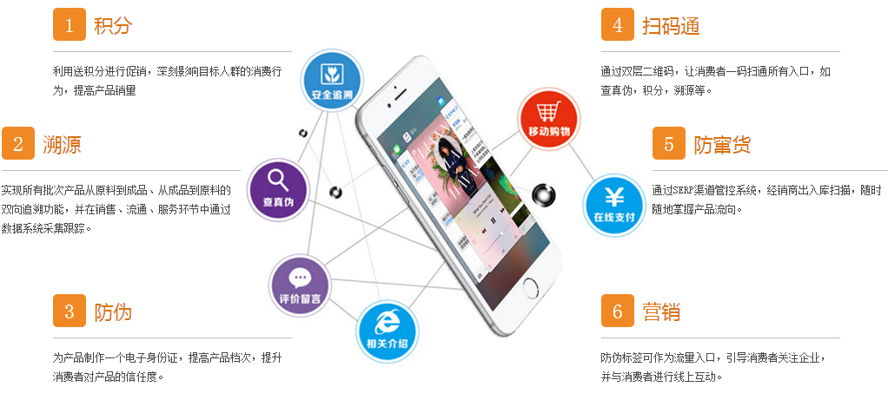
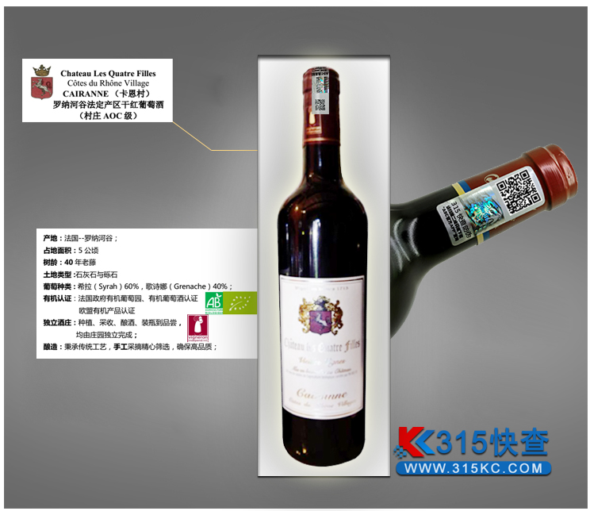
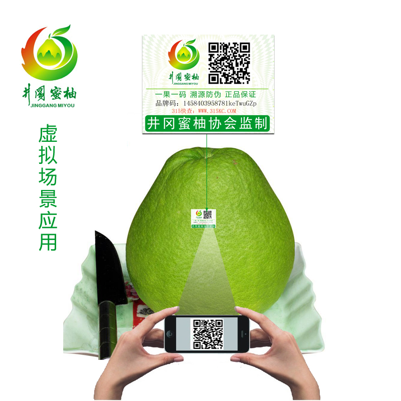
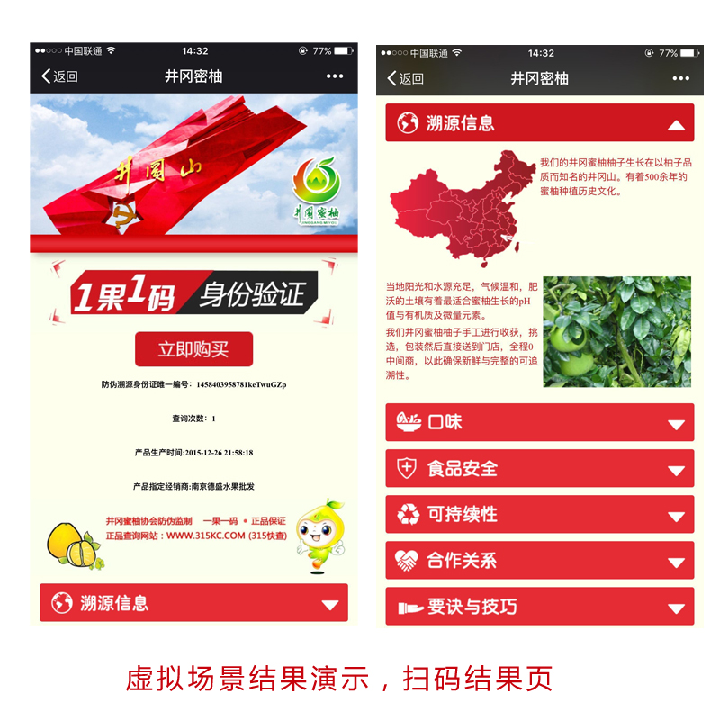
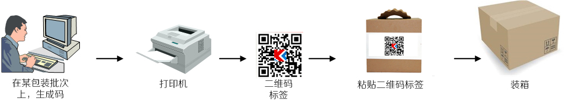
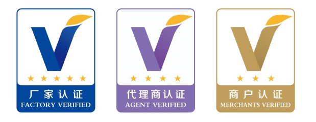

-

-
“315快查（www.315kc.com）”是南京安查通信息技术有限公司旗下运维的基于物联网大数据检索服务的云平台，公司本身是一家专业提供“产品防伪技术、产品防窜货物流追溯技术、企业产品信息管理”的互联网企业。
公司拥有国内领先的产品ID身份信息相关技术，也是少数拥有独立物联网相关技术开发能力及企业云平台服务的科技公司,自成立以来承建了多种行业产品防伪、产品追朔监管系统工程，为拥有不同行业背景、不同类型产品的公司提供了全面的产品防伪、产品物流跟踪监管、以及企业产品信息管理等相关服务。
专业的定位
南京安查通信息技术有限公司以专业的精神尽心的为所有的客户和伙伴提供高品质的产品服务。我们视服务质量为企业的生命，一方面聘请相关业务专家作为公司顾问，另一方面通过零距离的沟通使工程师和企业用户建立密切的联系，从而保证公司获得精准的用户需求，保证产品开发质量与交付时间。我们不仅着眼现在，更放眼未来
领先的行业产品
南京安查通信息技术有限公司视技术实现为企业发展的动力，对旗下全部产品拥有完全自主知识产权，贴心打造出最贴近用户需求、且灵活变通的的行业产品。
优质的服务
优秀的业务软件和良好的客户关系是我们赢得市场的基础。通过优质服务和样板工程，积极拓展我们潜在的客户，并与相应部门企业建立了良好的关系，树立了专业的形象。
充满朝气及进取精神的企业团队
南京安查通信息技术有限公司拥有一批长期从事企业信息化产品开发与应用的业务专家、技术精英，具有深厚的行业背景和改造信息系统实施的成功经验 。是一支熟悉业务、精于技术、热心服务、甘愿为所从事的事业奉献理想和青春的充满朝气的团队。
-
-
“品牌码-315快查平台”是基于物联网的二维码技术，为解决商品安全问题打造的防伪溯源平台系统，“315快查平台”信息平台让每一件商品都拥有唯一的、加密的二维码，该二维码不仅是每件商品的身份标识，同时也是一种能被普通智能手机识读的数据格式，结合手机应用、网络平台与后台服务，能够达到产品质量追溯和防伪的功能，同时还可以从每一件商品追溯到每批，然后每批的各个环节，以及通过扫描防伪标签上的二维码能查到商品的原辅材料、产地、上级批发商和下端零售商，二维码中还可以查询产品和品牌的信息，实现商品从生产、 批发、零售、消费全过程可追溯管理，是消费者了解商品安全来龙去脉的“窗口”；“315快查平台”信息平台采用大数据平台，能够更好的掌握和分析消费者的购买习惯，为企业与消费者之间互动带来更好的体验。
传统商品包装的特点是制版印刷，千篇一律。南京安查通信息技术有限公司所拥有的防伪技术使得每一个产品包装都具有独特、不可复制的结构识别特征，再结合个性化的二维码，构成局部纹理防伪标识；把每一张标识拍照，把信息存储在云中心数据库中，这样在互联网环境下用智能手机、pc机等任何通讯设备均可以随时查询。
食品质量安全、假冒伪劣等问题是当今社会顽疾，随着电商商务、移动互联时代的到来，商品销售、品牌传播方式也在发生变化，消费者通过扫描产品包装南京安查通信息技术有限公司标识二维码，可以鉴别产品真伪，放心消费，同时获得来自企业给予的积分奖励等会员优惠；可以提出个性化定制要求，获得称心如意的产品和服务，从而提高消费品质和体验。

-
-
罗纳纳河谷产区是法国仅次于波尔多产区的第二大AOC葡萄酒产区。其出产的葡萄酒以红酒为主，约占总产量的 94%。罗纳河谷地区生产的名酒，以在世界上获得巨大成功的西拉葡萄品种为主，酒感浓烈，热情奔放，香气四溢。据考古表明，早在公元一世纪，随着罗马人征服高卢，罗马人就发现了罗纳河谷两岸是种植葡萄的宝地，这里成为法国葡萄酒的发源地。100多年后，葡萄种植才传到波尔多等地区。
常用的信息防伪包装形式有：包装材料防伪、激光打印及激光光刻防伪、激光全息图技术等。这一类防伪包装的生产具备一定的科技含量，给造假者带来一定的难度。但存在一个缺点：包装可以被回收再次使用，而且，造假者所做的一次包装的酒类商品，在消费者实施辨别真伪之前，其外观所有特征与原包装几乎无差异，消费者很难辨别真伪。
破坏性防伪指一次性防伪，最大的优点是包装物不可重复使用。我们通过二维码防伪技术使得每一个产品包装都具有独特、不可复制的结构识别特征，再结合个性化的二维码，构成局部纹理防伪标识；把每一张标识拍照，把信息存储在云中心数据库中，这样在互联网环境下用智能手机、pc机等任何通讯设备均可以随时查询。
315快查的动态组防伪码是一种以查询验证为主，视觉鉴别、数字计算、设备检测为辅的综合防伪技术。企业使用该防伪技术不仅拥有多通道防伪查询监控管理平台，还可以同时获得多级用户。
江西吉安农产品防伪溯源管理平台（中国地理保护标志：井冈蜜柚）项目平台主要包含六个部分，第一部分为：井冈蜜柚质量安全追溯政府监管系统；第二部分为：井冈蜜柚质量安全追溯企业管理系统；第三部分为：井冈蜜柚质量安全追溯终端查询系统；第四部分为：中心数据库建设；第五部分为:“井冈蜜柚”产品移动营销系统；
以下是手机端二维码扫码之后结果页，我司可以根据客户具体需求，进行定制化开发，以下仅为虚拟演示图例。
 
-
-
315快查联盟网民权益保障计划是315快查与本联盟体系下商家联合发起的首个二维码扫码网民权益保障体系，目的是为了更好地保障网民消费者的合法权益。当315快查用户 在315快查提供的服务遭遇钓鱼欺诈、假冒并造成实际损失，可享有一定额度的保障金 ，并进入全面保障网民权益的绿色通道。
2016年3月15日，315快查宣布网民消费者使用315快查服务，如遭遇扫码结果中因假冒、钓鱼欺诈等网站内容受到损失，只要提供相关证据，315快查将不设上限进行先行保障。
保障流程
登陆并申请保障
在个人账户中的“点击记录”选择要投诉的网页链接记录，向315快查申请保障。 申请者填写个人资料、交易证据、申请内容；如资料填写不完整，需补充完善后申请方可生效；
保障中心受理
一般程序：5个工作日内，315快查保障中心与当事双方沟通并给出认定结果；
调解程序：保障中心无法认定的，由当事人提出申请，申请调解委员会或请中消协投诉和解平台调解，不受限于5个工作日；
网民获得保障
网民接到保障中心、调解委员会、中消协投诉和解平台的认定结果，根据实际情况获得相应保障，并通过315快查提取保障金；

Copyright © 2016版权所有
All Rights Reserved 315快查官网（www.315kc.com）